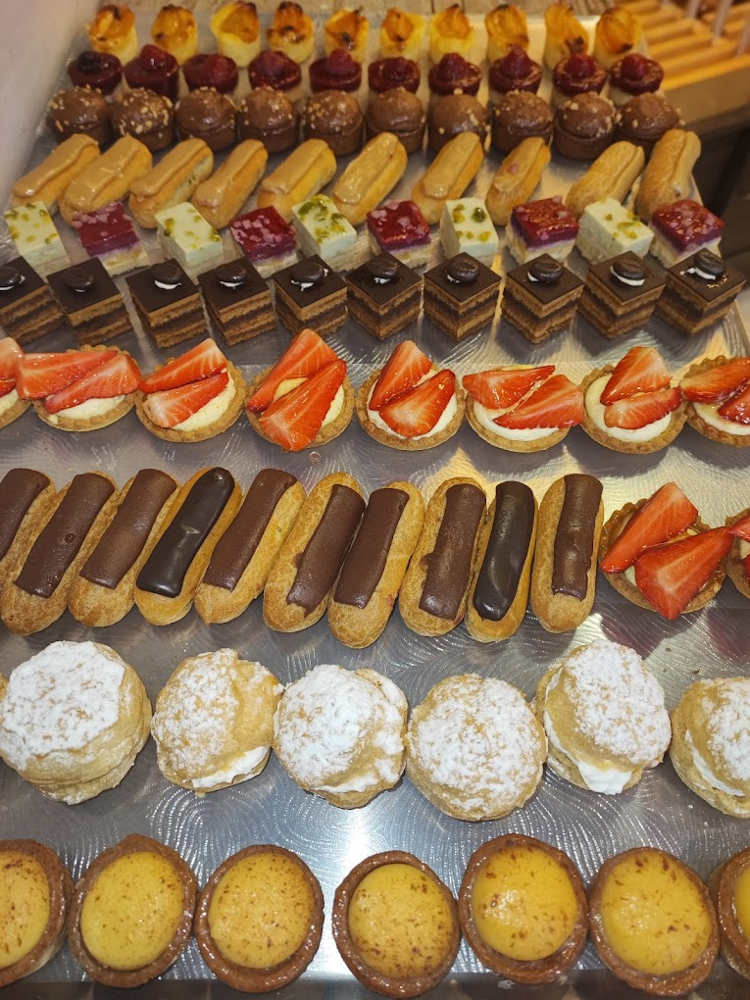
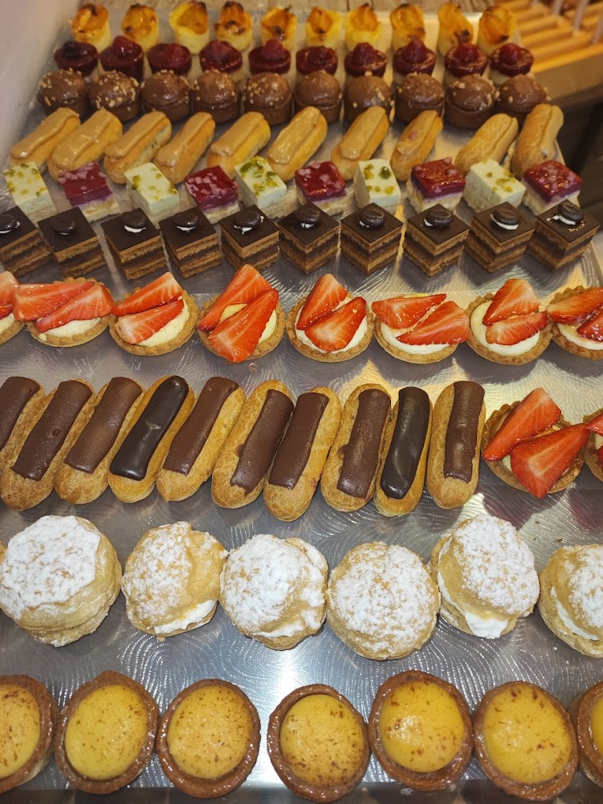

Au cœur du village d'Emmerin, la Boulangerie des quatre gourmands est bien plus qu'un simple commerce de quartier : c'est une adresse de confiance, conviviale et généreuse, où chaque client est accueilli avec le sourire.
Ici, le bon goût est une priorité. Pains traditionnels, baguettes croustillantes, viennoiseries dorées, pâtisseries maison et petites gourmandises salées… tout est fabriqué sur place avec passion et savoir-faire. Chaque jour , notre équipe s'engage à vous proposer des produits frais, faits maison et élaborés avec des ingrédients de qualité.
 
